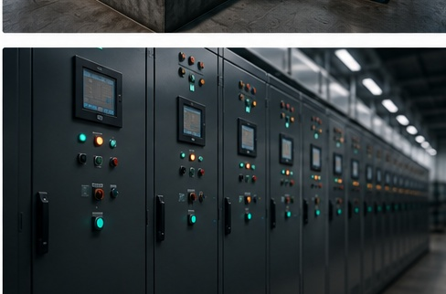

Approved telemetry inputs
Exports or approved read-only sources can come from BAS, SCADA, historians, PLC-derived telemetry, databases, APIs, or secure files.
Platform
Neraium organizes approved operational telemetry into baselines, comparisons, persistent behavior-change findings, and Evidence Packages for human review.

Exports or approved read-only sources can come from BAS, SCADA, historians, PLC-derived telemetry, databases, APIs, or secure files.
Signals are mapped to systems, modes, and Operating Context before comparing baseline behavior with a later period.
Neraium looks for sustained relationship changes across comparable conditions rather than isolated threshold events.
Supported findings are assembled with confidence dimensions, supporting evidence, limits, and recommended starting points.
Engineering receives context and evidence. Maintenance receives a concise view of what changed and what to check first.
No finding and insufficient evidence are valid results when telemetry does not support a behavioral conclusion.
The platform is designed to sit outside the control path. It does not change setpoints, issue commands, override equipment, or replace engineering judgment.
Historical exports can be enough for an evaluation.
Live source access, when used, must be approved and read-only.
Deployment controls are confirmed for each customer environment.